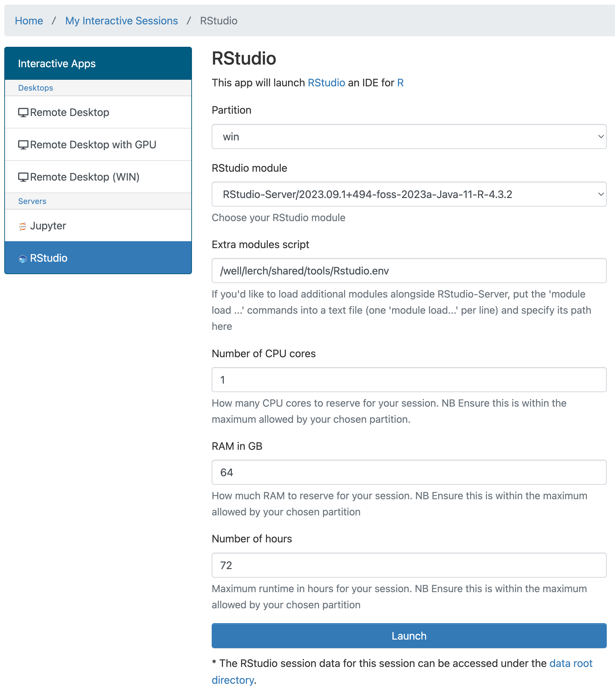

export APPTAINER_BIND=/well/
apptainer exec /well/lerch/shared/tools/mice.sif_latest.sif mincinfo file.mncUpdated Oct 21, 2024, to reflect OS updates on BMRC
Some bits and pieces on how to run the different MINC tools related to mouse imaging pipelines, prominently pydpiper, the viz tools, and RMINC, on Oxford’s BMRC cluster.
Some BMRC basics
The BMRC cluster login is described here. You obviously need an account first; how to request one is described here. Once you have an account an additional way to access BMRC is via the Open OnDemand interface, which is what I use for most tasks and will be important for visualization and RStudio.
Three notes about what data is allowed on the BMRC cluster 1. Rodent MRI data is fine 2. Rodent video tracking data has to get approval first - so contact them before trying deeplabcut, for example. 3. Human MRI data, even if from an open dataset, has a somewhat onerous approval process in place as well before it is allowed.
Using MINC tools via the singularity container
Once you have a shell open, there are two ways to access the MINC tools. For the majority of uses you’ll want to access them via our singularity container, located here: /well/lerch/shared/tools/mice.sif_latest.sif
All the main MINC tools are there, to be accessed like so:
I often set an alias to make life a bit easier:
alias SE='apptainer exec /well/lerch/shared/tools/mice.sif_latest.sif'And then the commands can be accessed more simply
SE mincinfo file.mncUsing RMINC on BMRC
You can use RMINC via the container, though with the disadvantage of currently (this will be fixed once I find a bit of time) using the older R 3.6. More importantly, it’s more challenging to access the cluster queues from within the container. So R and RMINC can also be accessed via bare metal.
To launch RStudio, start an Open OnDemand session. Then, when prompted with this screen

Choose RStudio. This will give some choices, like so:

- Select “WIN” from the partition; not strictly necessary, but there are usually available cores with lots of RAM here
- Select the RStudio module ending with version 4.3.2
- Change the “RAM in Gb”, the default is 4Gb, which won’t be enough. Go for 32 or even higher if you know you need lots of RAM.
At this point you’ll have an RStudio session in your web browser, running on a node on the BMRC cluster. Which is sweet.
To get RMINC working, you’ll need to do this once (i.e. only the first time you start an RStudio session).
usethis::edit_r_profile()This will open your R profile in the editor window. Enter these lines:
.libPaths(c("/well/lerch/shared/tools/packages/RMINC/build/", .libPaths()))This will make sure that RMINC and MRIcrotome, as well as a few other packages that I’ve installed, are loadable.
You will occasionally, when starting a new sessions, get an error (Error in .External2(C_X11, paste0(“png::”, filename), g$width, g$height,: unable to start device PNG) when creating any kind of plot. To fix this error, run the following command
options(bitmapType='cairo')(this can also be added to your ~/.Rprofile file to avoid repeating it too often).
Running pydpiper on BMRC
There are three steps to running a pydpiper pipeline on the BMRC cluster
- Generate a makeflow file using one of the pydpiper pipelines, such as MBM.py
- Fix a time allocation bug
- Use makeflow to run the pipeline
Here’s an example of generating the makeflow file. See here for an annotation of what all the options are doing. Key here is setting the backend to be ‘makeflow’
SE MBM.py --backend=makeflow --makeflow-opts='-h' --pipeline-name Yingshi-T2w-2023-08-11 --maget-registration-method minctracc --subject-matter mousebrain --init-model /well/lerch/shared/tools/initial-models/oxford-model-2023/oxford_t2w_mouse_60micron.mnc --run-maget --maget-atlas-library /well/lerch/shared/tools/atlases/Dorr_2008_Steadman_2013_Ullmann_2013_Richards_2011_Qiu_2016_Egan_2015_40micron/ex-vivo/ --maget-nlin-protocol /well/lerch/shared/tools/protocols/nonlinear/default_nlin_MAGeT_minctracc_prot.csv --maget-masking-nlin-protocol /well/lerch/shared/tools/protocols/nonlinear/default_nlin_MAGeT_minctracc_prot.csv --lsq12-protocol /well/lerch/shared/tools/protocols/linear/Pydpiper_testing_default_lsq12.csv --no-common-space-registration --lsq6-simple --num-executors 1 --files /well/lerch/users/yrf023/Yingshi-tests/native/*removed.mncNext we fix the time variable. In short, pydpiper sets the default time for some registrations to be 48 hours. Unfortunately, this cannot be overwritten with command arguments at this point. (When I have some time I’ll fix that). But since the makeflow file is just a text file, we can just do a string substitution to change it to 24 hours
cat Yingshi-T2w-2023-08-11_makeflow.jx | perl -npe 's/"wall-time"\: 172800/"wall-time": 86400/' > Yingshi-T2w-2023-08-11_makeflow_fixed.jxNow that we have a fixed up makeflow file, we can run it with makeflow itself. Right now makeflow is installed as a conda environment. Before the first run, edit your ~/.condarc file to contain the following bits:
channels:
- conda-forge
- bioconda
- defaults
pkgs_dirs:
- /well/lerch/shared/conda/${MODULE_CPU_TYPE}/pkgs
envs_dirs:
- /well/lerch/shared/conda/${MODULE_CPU_TYPE}/envsSee here for more details.
Assuming that the ~/.condarc file is correct, you can now set your environment for running conda.
# and run via makeflow
module load Anaconda3
eval "$(conda shell.bash hook)"
conda activate cctools-envNow you can run makeflow itself:
1makeflow -T slurm \
2-B '-p short,win' \
3--max-remote=500 \
4-o stderr.log \
5--shared-fs=/well,/gpfs3 \
6--singularity=/well/lerch/shared/tools/mice.sif_latest.sif \
7--singularity-opt='--bind=/well,/gpfs3' \
8--jx Yingshi-T2w-2023-08-11_makeflow_fixed.jx- 1
- We tell makeflow to use the slurm backend, which is what BMRC uses.
- 2
- We tell it to use both the short and win queues
- 3
- We allow up to 500 jobs to be submitted at once.
- 4
- We capture some errors to stderr.log
- 5
- We need to tell it which filesystems are shared.
- 6
- We need to tell it run the commands itself inside the container.
- 7
- We need to tell the container which filesystems to bind.
- 8
- And finally we pass it the fixed makeflow file.
That’s it - it will now run for a good while. I would thus recommend you run it inside a tmux session, so that you can log out and come back later to check on progress (or won’t lose progress if you get disconnected).
A good way to check on the status of the pipeline is to look at the makeflowlog file that will be produced as the pipeline runs, or use ‘squeue –me’ to see which jobs are submitted to the cluster.
(Also note, there should be a better way to run these pipelines via makeflow’s workqueue, but last I tried I couldn’t get it to run. Will return to that at some point.)